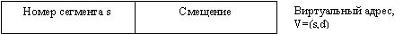

В системах с сегментной организацией (сегментацией) это ограничений снимается, и программа (и ее данные) может занимать много отдельных блоков первичной памяти (рисунок 1.14). Сами блоки, необязательно одинакового размера, все же должны состоять из смежных ячеек, однако отдельные блоки могут размещаться и не рядом друг с другом.
Рисунок 1.14 Распределение памяти несмежными блоками.
При таком подходе возникает несколько интересных проблем. Например, гораздо более сложной теперь становится проблема защиты программы каждого пользователя от несанкционированного доступа со стороны других пользователей. Парой граничных регистров здесь больше не обойтись. Аналогичностановится гораздо труднее ограничивать допустимую область доступадля любой конкретной программы. Один из способов реализации защиты памяти в системах с сегментной организацией - это использование ключей защиты, как показано на рисунке 1.15.
Рисунок 1.15 Защита памяти при помощи ключей в мультипрограммных системах с распределением памяти несмежными блоками.
Когда в ЦП для ключа защиты памяти устанавливается значений 2, соответствующее пользователю B, прграмма этого пользователя может обращаться только к тем блокам памяти, которые имеют именно этот ключ защиты (2). Управление ключами защиты осуществляет только операционная система.
Виртуальный адрес в сегментной системе - это упорядоченная пара v=(s,d), где s - номер сегмента виртуальной памяти, а d - смещение в рамках этого сегмента, где находится адресуемый элемент (рисунок 1.16).

Рисунок 1.16. Формат виртуального адреса в чисто сегментной системе.
Процесс может выполняться только в случае, если его текущий сегмент (как минимум) размещается в первичной памяти. Сегменты передаются из внешней памяти в первичную целиком. Все ячейки, относящиеся к сегменту, занимают смежные адреса первичной памяти. Поступающий из внешней памяти сегмент может быть помещен в любой достаточно большой по размеру свободный блок смежных ячеек первичной памяти. Стратегии размещения при сегментации идентичны стратегиям, применяемым при мультипрограммировании с переменными разделами, причем наиболее часто спользуются принципы "первый подходящий" и "наиболее подходящий"
Динамическое преобразование адресов осуществляется следующим образом (рисунок 1.17).[4] Выполняющийся процесс выдает адрес виртуальной памяти v=(s,d). Механизм отображения сегментов ищет сегмент s в таблице сегментов и определяет, что этот сегмент находится в реальной памяти, начиная с ячейки s'. Адрес реальной памяти, соответствующий виртуальному адресу v=(s,d), формируется затем путем добавления s' к d. Более подробно эту процедуру мы рассмотрим далее.
Рисунок 1.17 Преобразование виртуального адреса в чисто сегментной системе.
Предоставлять каждому процессу неограниченный доступ к любому сегменту в системе не целесообразно. В действительности одним из достоинств сегментных систем является именно возможность четкого управления доступом. Для этого каждому процессу предоставляются определенные права доступа к каждому сегменту и фактически полностью запрещается доступ ко многим сегментам.
В таблице[4] перечислены наиболее распространенные виды управления доступом, применяемые в современных системах. Если процессу разрешено чтение сегмента, то процесс может выбрать любой элемент информации, содержащейся в этом сегменте. При желании процесс может сделать полную копию этого сегмента.
| Вид доступа | Сокращенное обозначение | Пояснение |
|---|---|---|
| Read(чтение) | R | Этот блок можно читать |
| Write(запись) | W | Этот блок можно модифицировать |
| Execute(выполнение) | E | Этот блок можно выполнять (как программу) |
| Append(дополнение) | A | Этот блок допускает добавление информации в конце |
Если процессу разрешена запись в сегмент, то процесс может изменить любой элемент, содержащийся в сегменте, и поместить в этот сегмент доплнительную информацию. При желании процесс может полностью уничтожить всю информацию сегмента.
Процесс, которому разрешено выполнение сегмента, может работать с этим сегментом как с программой. К сегменту, содержащему данные, доступ для выполнения обычно запрещается.
Процесс, которому разрешено выполнение сегмента, может работать с этим сегментом, как с программой. К сегменту,содержащему данные, доступ для выполнения обычно запрещается.
Процесс. которому разрешено дополнение некоторого сегмента, может записать дополнительную информацию в конце сегмента, но не может изменить существующую информацию. В системе, предусматривающей все эти четыре вида управления доступом, можно создать 16 различнх режимов управления доступом, азрешая или запрещая каждый вид. некоторве из этих режимов весьма полезны, а некоторые не имеют смысла. Для простоты рассмотрим восемь различных комбинаций видов доступа для чтения, записи и выполнения, как показано в таблице[4].
| Режим | Чтение | Запись | Выполнение | Пояснение | Применение |
|---|---|---|---|---|---|
| Режим 0 | Нет | Нет | Нет | Любые виды доступа запрещаются | Для защиты от несанкционированного доступа |
| Режим 1 | Нет | Нет | Да | Только для выполнения | Программа предоставляется пользователям, которые могут ее только выполнять, но не могут ни модифицировать, ни копировать |
| Режим 2 | Нет | Да | Нет | Только для записи | Эти режимы не используются - не имеет смысла предоставлять право записи, но не позволять читать |
| Режим 3 | Нет | Да | Да | Можно писать и выполнять, но нельзя читать | |
| Режим 4 | Да | Нет | Нет | Только для чтения | Для выборки информации |
| Режим 5 | Да | Нет | Да | Для чтения и выполнения | Программу можно копировать и выполнять, но нельзя модифицировать |
| Режим 6 | Да | Да | Нет | Можно читать и писать, но не выполнять | Служит для защиты данных от ошибочной попытки выполнения как программы |
| Режим 7 | Да | Да | Да | Доступ без ограничений | Этот режим доступа предоставляется самым достоверным (привилегированным)пользователям |
В режиме 0 любые виды доступа к сегменту блокируются. Этот режим необходим для схем защиты от несанкционированного доступа, где к данному сегменту нельзя обращаться со стороны конкретного процесса.
В режиме 1 разрешается доступ к сегменту только для выполнения. Этот режим необходим, когда процессу нужно разрешить использовать программу, содержащуюся в сегменте, но нельзя позволить копировать или изменять ее.
Режимы 2 и 3 практически не используются - не имеет никакого смысла предоставлять процессу право изменять содержимое сегмента, не позволяя в то же время читать тот же сегмент.
Режим 4 разрешает доступ к сегменту только для чтения. Этот режим необходим для информационно-поисковых систем, где процесс должен получать доступ к информации, но не может изменять ее.
Режим 5 разрешает чтение и выполнение. Это необходимо в ситуациях, когда процессу разрешается использовать программу. содержащуюся в сегменте. нонельзя изменять исходную копию. процесс может, однако, сделать собственную копию этого сегмента, а потом уже ее модифицировать.
Режим 6 разрешает чтение и запись. это необходимо, когда в сегменте размещаются данные, которые процесс может читать или писать, но которые должны быть защищены от случайной попытки "выполнения" (поскольку этот сегмент не программа).
Режим 7 предоставляет неограниченный доступ к сегменту. Этот режим необходим для того, чтобы позволить процессу полностью распоряжаться своими собственными сегментами и предоставлять ему статус "доверенного лица" для доступа к сегментам других пользователей.
Простой механизм управления доступом, описанный в этом разделе. является основой для сегментной защиты, реализованной во многих реаьных системах.
Как и при страничной организации, в сегментных системах существует много стратегий реализации преобразования адресов сегментов. Это можно делать путем прямого, ассоциативного или комбинированного (ассоциативно-прямого) отображения. Это можно делать при помощи кэш-памяти, достаточно большой для размещения всей таблицы сегментов, или кэш-память можно сипользовать только для хранения информации о сегментах, обращения к которым производились в самое последнее время. в данном разделе мы рассмотрим определение адресов сегментов путем прямого отображения с ведениемполной таблицы сегментов в высокоскоростной кэш-памяти. Формат типичной строки такой таблицы сегментов показан на рисунке 1.18.
Рисунок 1.18 Строка таблицы сегментов.
Рассмотрим вначале случай, когда преобразование адреса происходит нормально, а затем обсудим несколько возможных проблем. Выполняющийся процесс обращается по виртуальному адресу v=(s,d). Номер сегмента s прибавляется к базовому адресу b, на ходящемуся в регистре начального адреса таблицы сегментов, образуя реальный адрес b+s строки сегмента s в таблице сегментов. Таблица сегментов содержит адрес первичной памяти s', с которого начинается данный сегмент. Прибавлением смещения d к s' формируется реальный адрес r=d+s', соответствующий виртуальному адресу v=(s,d).
На рисунке 1.18 подробно показан формат типичной строки таблицы сегментов.Бит-признак присутствия rговорит о том, находится или нет данный сегмент в текущий момент времени в первичной памяти. если сегмент в памяти, то s' - его начальный адрес. если сегмента в первичной памяти нет, то a - адрес внешней памяти, по которому следует выбрать сегмент, чтобы процесс мог продолжить свое выполнение. Все бращения к сегменту контролируются по размеру - длине сегмента l, чтобы удостовериться в том. что они не приводят к выход за границы сегмента. Каждое обращение к сегменту контролируется также по битам-признакам защиты, чтобы определить, разрешается ли выполнение соответствующей операции доступа. Таким образом, во время динамического преобразования адресов после нахождения строки в таблице сегментов для конкретного сегмента s прежде всего проверяется признак присутствия r, чтобы установить. находится ли требуемый сегментв первичной памяти. Если нет, то вырабатывается прерывание по отсутствию сегмента; по этому прерыванию опреационная система принимает управление на себя и загружает требуемый сегмент из внешней памяти, где он находится по адресу а. После загрузки сегмента обработка адреса продолжается, смещение d сравнивается с длиной сегмента l. Если d больше l, то вырабатывается прерывание по выходу за пределы сегмента, операционная система принимает управление на себя и прекращает выполнение данного процесса. Если смещение d находится в рамках сегмента, то осуществляется контроль по битам-признакам защиты, чтобы удостовериться в том, что соответствующая операция доступа разрешена. Если да, то, наконец, базовый адрес s' сегмента в первичной памяти суммируется со смещением d и образуется реальный адрес r=s'+d, соответствующий виртуальному адресу v=(s,d). если указанная операция доступа не разрешена, то происходит прерывание по защите сегмента, операционная система принимает управление на себя и прекращает выполнение данного процесса.[4]
Одно из преимуществ сегментной организации по сравнению со страничной состоит в том, что эта концепция является скорее логической, чем физической. В своем самом общем виде сегменты не ограничены каким-то определенным размером. они могут иметь такой размер (естественно, в разумных пределах), какой нужен. Так, сегмент для размещения некоторого массива будет иметь размер, соответствующий этому массиву. Размеры сегмента, содержащего динамическую структуру данных. могут увеличиваться и уменьшаться в соответствии с расширением и сокращением самой структуры данных. Сегмент, который предназначается для размещения кода процедуры, генерируемого компилятором,будет иметь размер, соответствующий длине этого кода.
Коллективное использование программ и данных в сегментной системе получается гораздо проще, чем в системе с чисто страничной организацией. Если, например, какой-либо массив в чисто страничной системе имеет размер в три споловиной страницы, то вместо одного указания, что "этот массив используется коллективно", мы должны предусматривать отдельные указания для каждой страницы, котрую занимает массив. А работать с неполной страницей может быть весьма затруднительно. Ситуация еще более усугубляется в случае динамической структуры данных. Если динамическая структура данных расширяется с переходом на новую страницу, то признаки совместного использования страниц необходимо перестраивать во время выполнения процессов. А в сегментированной системе, после того как определенные сегменты объявлены как коллективно используемые (разделяемые ), их структуры данных могут расширять ся и сокращаться произвольно, не меняя логического факта, что они занимают разделяемые сегменты.
На рисунке 1.19 показано, каким образом осуществляется коллективное использование в чисто сегментной системе. Два процесса могут совместно использовать некоторый сегмент, если в их таблицах сегментов просто будут строки, указывающие на один и тот же сегмент первичной памяти.
Рисунок 1.19 Коллективное использование программ и данных в чисто сегментной системе.